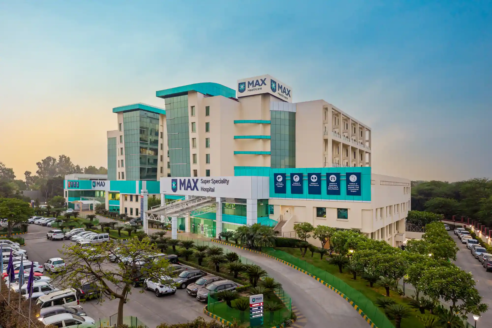
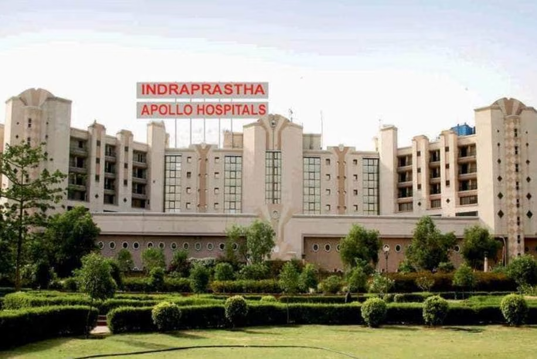
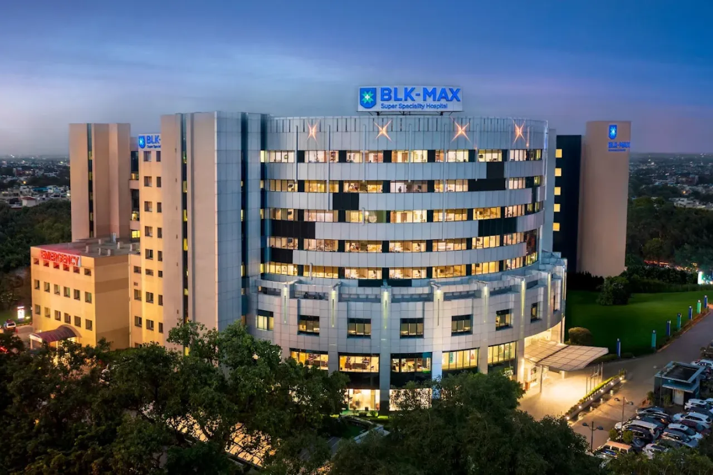
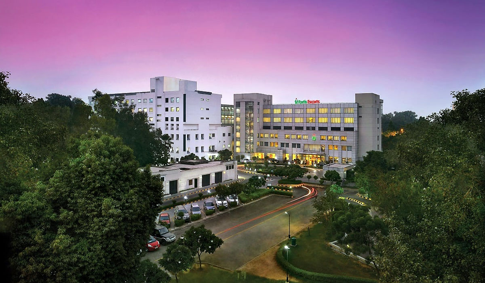
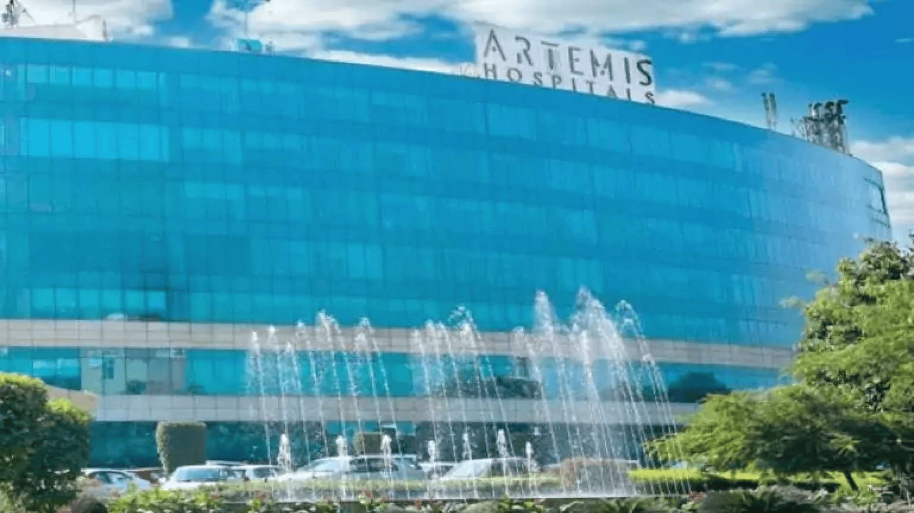
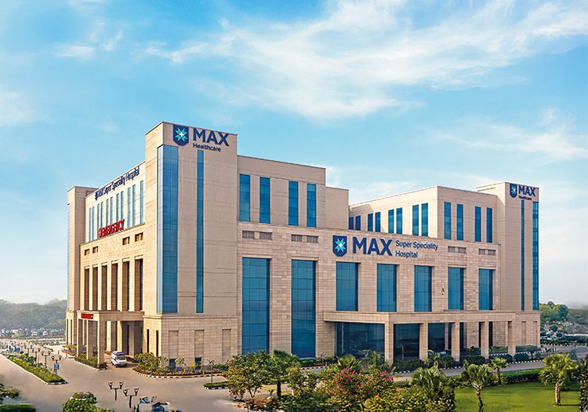
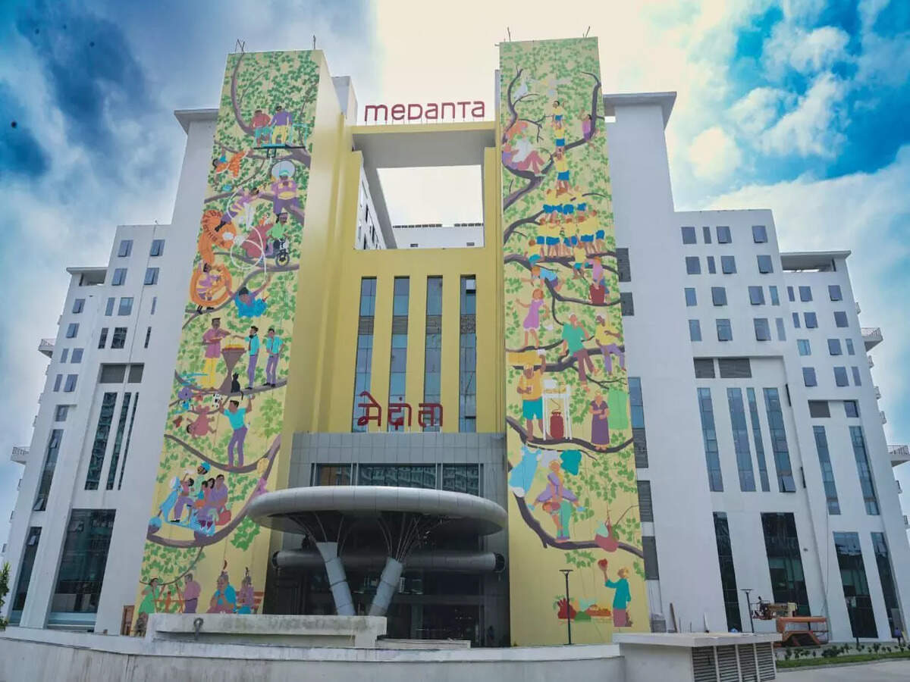
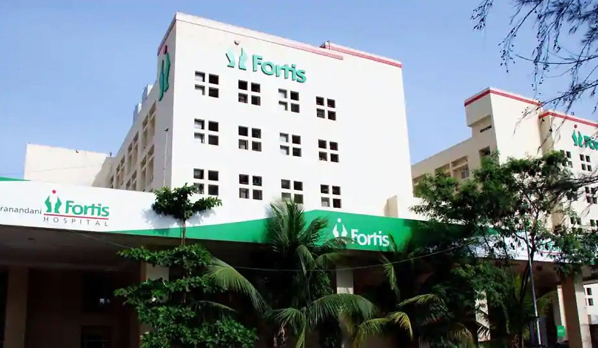
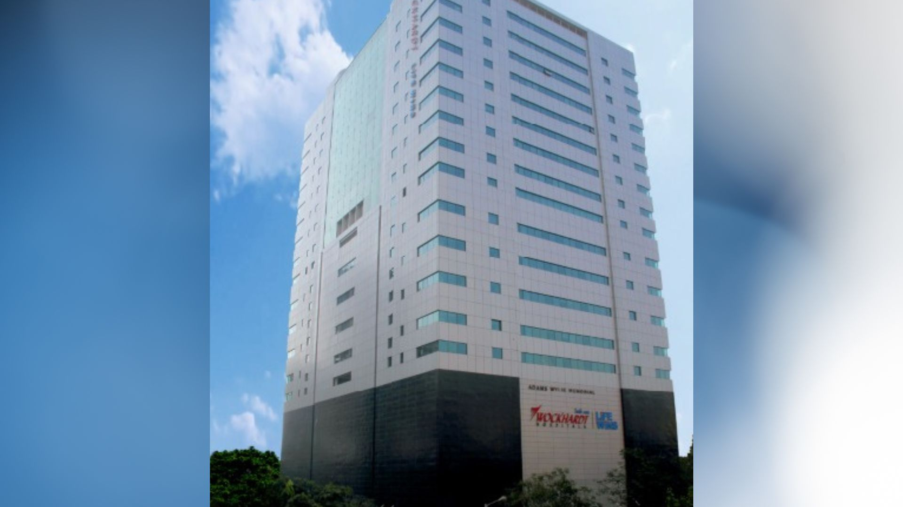
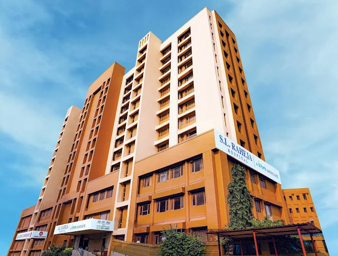

مستشفى ماكس سوبر سبيشاليتي، ساكيت
ساكيت، نيودلهي
الأورام · القلب · زراعة الأعضاء · الأعصاب
استفسر عبر علاج مي إنديااستعرض مستشفيات مختارة في دلهي وغوروغرام ونويدا ومومباي ونافي مومباي. يساعد علاج مي إنديا في تنسيق إرسال التقارير والاستفسارات العلاجية وطلبات الاستشارة، ويتم تأكيد الخدمات والتوفر لكل حالة.
أرسل حالتك إلى علاج مي إنديا
ساكيت، نيودلهي
الأورام · القلب · زراعة الأعضاء · الأعصاب
استفسر عبر علاج مي إنديا
نيودلهي
الأورام · القلب · تخصصات متعددة
استفسر عبر علاج مي إنديا
بوسا رود، نيودلهي
الأورام · الأعصاب · زراعة الأعضاء
استفسر عبر علاج مي إنديا
أوكلا، نيودلهي
علوم القلب · رعاية القلب
استفسر عبر علاج مي إنديا
غوروغرام
الأورام · القلب · زراعة الأعضاء · الجهاز الهضمي
استفسر عبر علاج مي إنديا
غوروغرام
القلب · الأورام · زراعة الأعضاء
استفسر عبر علاج مي إنديا
غوروغرام
الأورام · القلب · الأعصاب
استفسر عبر علاج مي إنديا
نويدا
الأورام · القلب · الأعصاب
استفسر عبر علاج مي إنديا
نويدا
القلب · الأعصاب · زراعة الأعضاء
استفسر عبر علاج مي إنديا
نويدا
القلب · الأورام · الجهاز الهضمي
استفسر عبر علاج مي إنديا
CBD بيلابور، نافي مومباي
رعاية المرضى الدوليين · القلب · الأورام
استفسر عبر علاج مي إنديا
مومباي
القلب · الأورام · تخصصات متعددة
استفسر عبر علاج مي إنديا
مومباي سنترال
المرضى الدوليون · تخصصات متعددة
استفسر عبر علاج مي إنديا
ماهيم، مومباي
القلب · الجهاز الهضمي · المسالك البولية
استفسر عبر علاج مي إنديا
باريل، مومباي
زراعة الكبد والكلى · القلب · الأعصاب · الجهاز الهضمي
استفسر عبر علاج مي إنديا
أنديري ويست، مومباي
الأورام · القلب · الأعصاب · زراعة الأعضاء · الجراحة الروبوتية
استفسر عبر علاج مي إنديا
فيل بارلي ويست، مومباي
الأورام · القلب · زراعة الكلى والكبد · الأعصاب · العظام والعمود الفقري
استفسر عبر علاج مي إنديا
غيرغاون، مومباي
القلب · الكبد وزراعته · الكلى والمسالك البولية · الأعصاب · الأورام · العظام والعمود الفقري
استفسر عبر علاج مي إندياكوبار خيراني، نافي مومباي
رعاية متعددة التخصصات · تنسيق المرضى الدوليين
استفسر عبر علاج مي إنديا